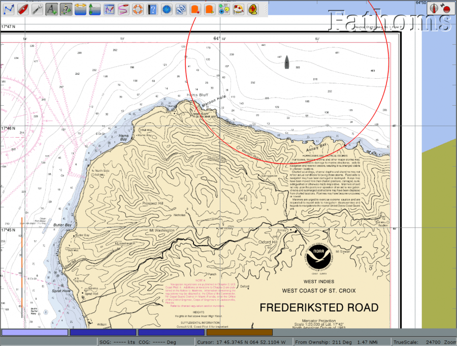
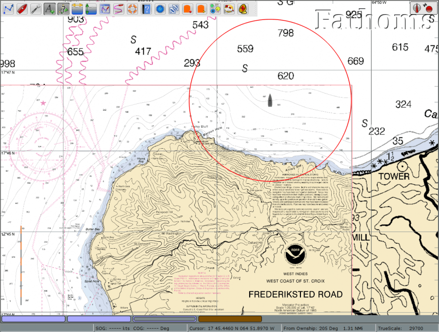
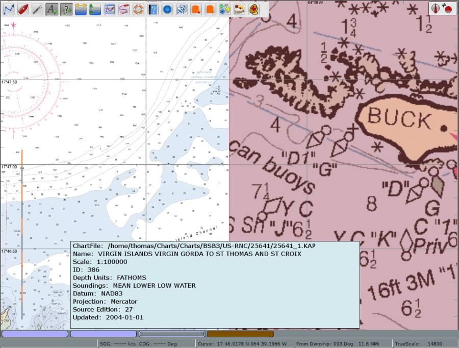
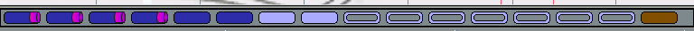
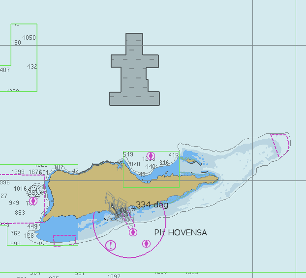

Chart Quilting
Chart quilting is a way to display parts of several charts together on the screen, redrawn to the same scale.
Former Limitation Removed - With the introduction of OpenCPN 4.2; Raster Mercator charts, Raster Transverse Mercator charts, Raster Polyconic charts and Raster skewed charts, of these same projections, may exist in the same quilt. The transition from one type of projection to another is seamless. Quilting the skewed charts is very computationally heavy and can't be used in non-OpenGL, make sure you have the use of accelerated graphics (OpenGL) enabled in Toolbox→Display→Advanced.
Quick Start
- Go to Options→Display→General→Enable Chart Quilting. Tick the box.
- Another, more simple way, is to use the “Q” short-cut key to toggle quilting on/off.
Zooming in, automatically brings up larger scale charts, if available. Panning reveals a continuous quilt of the available charts. If you started with a raster chart, only raster charts will, with the exception noted below, be in the quilt. The same logic applies to S57 and S63 Vector Charts (ENCS). Make sure you are familiar with the
Chart Status Bar as this will help you interpret all available information.
The quilt, like a single chart can be displayed North Up or Course Up
Read more
Own Ship Auto Follow and Display Orientation
The one quilting exception occurs when quilting Raster or ENC charts. If a Raster or ENC chart is not available to be displayed and a CM93 ver2 chart of suitable scale is available, then the CM93 ver 2 chart will be added to the quilt.
What is the use of Quilting?

In single chart mode, getting near the edge of the chart there is no information outside the chart. You manually have to change to the next chart, by selecting one of the charts in the chart bar.

The situation changes dramatically when quilting mode is activated. The amount of relevant information on the screen increases, and the next chart is automatically available.
Displaying charts
OpenCPN has two modes of displaying charts, single chart mode and quilting mode. In a new installation, quilting is on by default.
To activate single chart mode
Go to Options→Display→General and deselect the box Enable Chart Quilting. This mode only shows one chart at a time, and a switch to other charts must be done by clicking another chart in the Chart Bar. All printed general chart information, outside the chart proper, can easily be read.
To activate chart quilting
Go to Options→Display→General and tick the box Enable Chart Quilting, or use the shortcut key Q to toggle quilting. Tick the box “Show Chart Outlines” at the same time as this will help you see individual charts.
Full Screen Quilting
Options→Display→Disable Fullscreen Quilting.
By default all visible charts of an appropriate scale are used in the quilt. With this box checked only charts that overlap the center of the screen are used in the quilt. Checking this box may give a performance boost in certain circumstances.
To determine if Chart quilting is on
There are some visual indications on screen to confirm if quilting is on or off.
- If the right click menu contains the entry “Hide This Chart”, quilting is on. Clicking the entry excludes the chart from the quilt.
- The colored rectangles in the status bar have rounded corners and the white borders of the charts are invisible when quilting is on. When quilting is off in ToolBox→Settings, the colored rectangles have “square” corners.r.
- When hovering with the mouse pointer over a inactive raster chart button in single chart mode, a thumbnail of the chart is displayed in the upper left corner of the screen. At the same time an information box pops up above the button with details about the chart. This changes with quilting, as the thumbnails are replaced with a transparent reddish high-lighting of the charts that is a part of the present quilt or has a larger scale than the reference chart in the quilt.
- The exception to the last rule is CM93 charts. When an area is only covered by CM93 charts, indicated by a long yellow chart button in the status bar, and in quilting mode, no info-box is displayed and no reddish highlighting takes place.
- CM93 individual cells are outlined in magenta.
With chart quilting more than one chart can be displayed and active at the same time, in the screen above, for example there are two pale blue buttons, as there are two raster-charts in this quilt. In single mode only one chart button is highlighted at a time.
Depth units. that are normally shown in the upper right corner of the display (if activated in the toolbox), are only displayed in quilting mode if all participating charts uses the same unit.
Many of these features are illustrated in this screen-dump.

This is a quilt consisting of three raster charts, two that are actually displayed and one smaller scale chart that is hidden behind the larger scaled charts of St Croix.

This is the button for the not displayed chart in the quilt.
The mouse pointer is over the middle raster chart and the chart information box is shown, together with the red highlighting of the chart on the screen.
If the chart info box contains much less info than above, just click the button to display the chart, then go back and hover with the cursor over the chart button again. The full info will now be available.
No depth unit is shown in the quilt as the left chart is in Feet and the right in Fathoms and parts thereof. Notice the lack of zoom level in the status bar, a quilt , by definition, consists of several different zoom levels.
Which charts are quilted?
There are several rules built into OpenCPN governing exactly how different chart styles reacts to the quilting mode.
- Raster charts and Vector charts are quilted separately. You can quilt either raster charts or vector charts, but not both at the same time.
- The exception to this rule is: CM93 ver2 charts, if available, may be quilted with raster and vector charts under certain conditions e.g. the view is so far zoomed out that the rightmost (smallest scale) raster chart is too small to be useful.
- CM93 ver2 charts can be quilted separately.
- BSB4 and nv-charts, using plugins, quilts with other Raster Charts, following the rules above.
User control
Users can control if an individual chart, is allowed in the quilt or not.
- Right clicking on any chart in a quilt in the chart-bar and clicking “Hide This Chart” on the pop up menu, removes the chart from the quilt. The chart button in the Status bar changes to {opencpn:manual:not_participate.png?nolink&60×20}}.
- The same thing can be achieved through the right-click menu when clicking on a displayed chart.
- To activate the chart again right click this button an then click “Add this chart to quilt”
Controlling the scale of the quilt view.

The “quilt reference chart” is the left-most, largest scale chart, highlighted in the chart bar. This is the left of the two pale blue chart buttons above.
Click the next chart blue button “one-to-the-right” of the of the current reference chart. The reference scale of the quilt will be decreased, but the viewpoint will not change. The same logic applies if clicking a chart-to-the-left of the present reference chart, except that the scale of the quilt will increase. Zooming in/out will also move the reference chart to the left/right.
Known issue with some NOAA ENC:s

Some NOAA ENC:s are produced with “holes” in. OpenCPNs handles almost all of these cases. The picture above is from S:t Croix in the Caribbean, using an old version of OpenCPN. There are still some gray areas in this vicinity but only if the scale is larger than 1:10,000. Very few users are likely to notice this.
The gray rectangle above is a “hole” in a chart, where a smaller scale chart with coverage exists. The “hole” is due to the fact that this area wasn't surveyed to the scale of the chart.
Clipped Objects
Clipped objects at the edge of quilted vector charts S57/S63 of different scales may not show the complete object.“